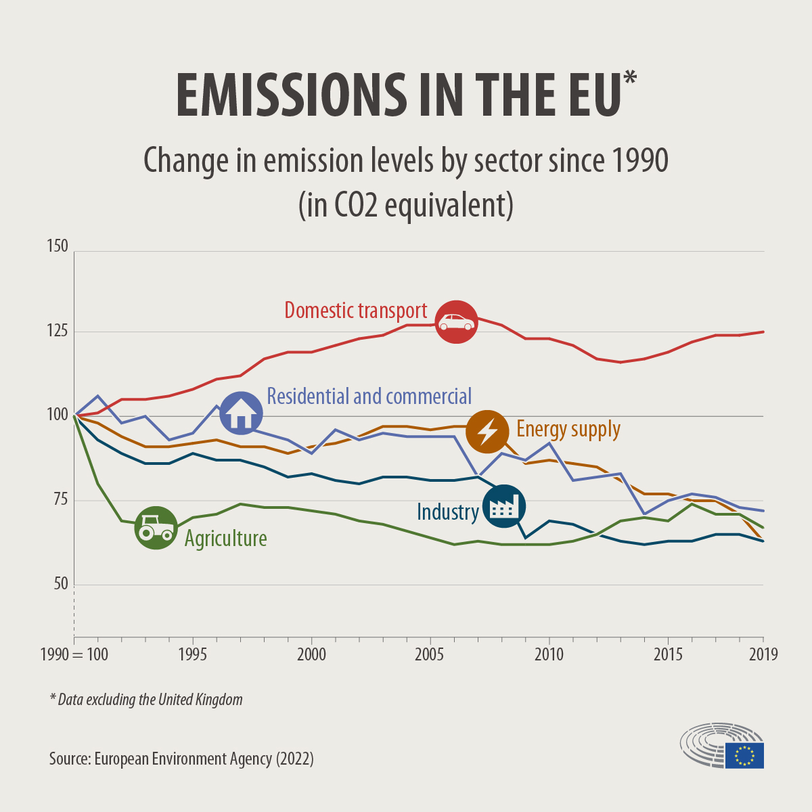

Potential to reduce vehicle carbon emissions by 45%! How does the concept of green driving apply to fleet management?
2022-10-26
At the end of 2021, the COP26 United Nations Climate Change Conference formulated the Glasgow Agreement (Glasgow), in which 149 countries have committed to net-zero carbon emissions by 2050. "Net-zero" has become a global consensus, and governments of various countries have also agreed to reduce carbon emissions. Gradually strengthen the strength and propose corresponding policies.
Among many carbon emission sources, "road carbon emission" is the most difficult part to reduce. According to EU 2019 data, transport carbon emissions are close to a quarter of all carbon emissions, 70% of which come from road vehicle transport. From 1990 to 2019, carbon emission sources such as home, energy, agriculture, and industry all decreased year by year. Only the "road transportation" category of carbon emissions increased instead of decreasing.
（來源）
As an international model student of carbon reduction, the European Union is facing such a problem. In other countries, the carbon emission of transportation roads is a big challenge that is difficult to deal with. Part of the reason is that many of the carbon emissions from road transport come from civilian vehicles,
Perhaps "green driving" could be a solution.
What is Green Driving?
The concept of green driving (eco-driving) was first seen in Switzerland and Finland, and gradually popularized in European countries in the early 21st century. It is a driving skill that pursues the lowest unnecessary fuel consumption, improves road driving safety and reduces the risk of accidents.
The concept of green driving in a narrow sense refers to "good behavior", which means that vehicle drivers can use artificial technology to minimize unnecessary fuel consumption, so that every drop of gasoline can be used efficiently.
The concept of green driving in a broad sense covers "good routes" and "good vehicles", which means the goal of low-carbon emissions in vehicle and route selection.
Green driving carbon reduction benefits up to 45%
In terms of theory, many studies have pointed out that only focusing on improving driver behavior (green driving in the narrow sense) can effectively reduce vehicle fuel consumption by 15-25% and reduce carbon emissions by at least 30%. Study 1, Study 2, Study 3, Study 4 .
If we consider the broad concept of green driving, including vehicles and low-carbon emission route selection, Research estimates that the carbon reduction benefit can reach 40~45%.
Personally, UK driving schools also measured green driving performance, compared to comparative The driving habit of slamming on the accelerator brake (within a reasonable range of passenger comfort) can save 24.4% of gas simply by using green driving skills.
Green driving technology can help enterprise fleet management
There are also many successful cases in enterprise fleet management applications, such as The Swiss Canon company's fleet of 350 vehicles reduces fuel consumption by 6.1% and reduces the accident rate by 35% after receiving green driving training. On average, each vehicle can travel 22% more distance between accidents.
Germany's HAMBURGER WASSERWERKE water public works team reduced their overall fuel consumption by 6% and reduced road accident damage costs by more than 25% after an 11-month green driving training program.
In the case of the hackathon project initiated by SIGMA in Sweden, the participating teams used SAS Viya analysis, to find the lowest carbon emission path, help EI-Kresten waste recycling industry fleet reduce carbon emissions by 24%.
In terms of operation, green driving can bring quite amazing benefits. According to DriverFocus, a road risk management company in Dublin, calculated, that in addition to reducing fuel consumption by an average of 7.5% per year, fleets using green driving techniques will also The maintenance cost and insurance cost are reduced by 20%, the accident rate is reduced by about 25%, and the total cost of each vehicle can be saved by 1,000 euros per year.
The above does not include the value that the reduced carbon emissions can bring in the carbon credit market in the future after being certified by the regulatory authority.
Reference reading: Carbon pricing, carbon trading, carbon neutrality, net zero, carbon tariffs, carbon capture, carbon budgets... 16 carbon terms you must know!
How can companies use the concept of green driving to optimize fleet management?
Effective green driving fleet management has three levels:
Operational aspects: For example, is the vehicle selected with low fuel consumption? Is tire pressure checked regularly? Are maintenance and oil changes carried out as planned? Fleet company culture and operational efficiency have a direct impact on fleet fuel consumption and carbon emissions performance.
Strategic Level: At this level, managers must decide "how to get from point A to point B" while maintaining performance, safety, and carbon footprint. Managers need to comprehensively consider parameters such as path length, traffic flow, terrain and road types, and the number of intersections and curves, and choose the path with the lowest fuel consumption and carbon emissions in accordance with the type of fleet vehicles, while taking into account the time efficiency.
It is almost impossible for the human brain to calculate these parameters at one time. At this time, information technology - big data analysis and GIS layer information are very good assistants. Combustion Technology's CHAP-V system also uses big data analysis to screen out low or high carbon emission paths in a large number of geographic layer data, decouple behavior trend factors, and accurately determine the optimal path.
Operation: When you have properly operated and maintained your fleet, and have selected a good path, the driver's operation is the last key. Did you press the accelerator hard? Are you anxious? Is it idling for a long time? Traditional management methods are difficult to analyze in detail, but with GPS vehicle behavior data, it is possible to analyze whether drivers follow the green driving technical guidance with an accuracy in seconds.
In the past, it was difficult to apply the concept of "green driving" to enterprise fleets, mainly because the traditional management method can only see the fuel consumption performance of the fleet from the fuel list and pound list. The data resolution is low, and it is difficult to see where to start. Start optimizing.
The CHAP-V system launched by Combogic Tech. is committed to solving the problem of fleet carbon management. It uses high-precision GPS vehicle behavior data, GIS geographic layer information, and unsupervised AI big data analysis, allowing technology to replace the human brain for complex tasks, such as Computing data-driven optimization for fleet management.